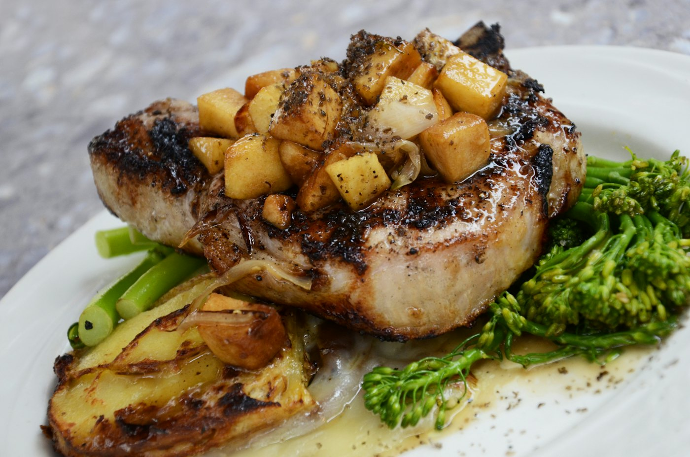
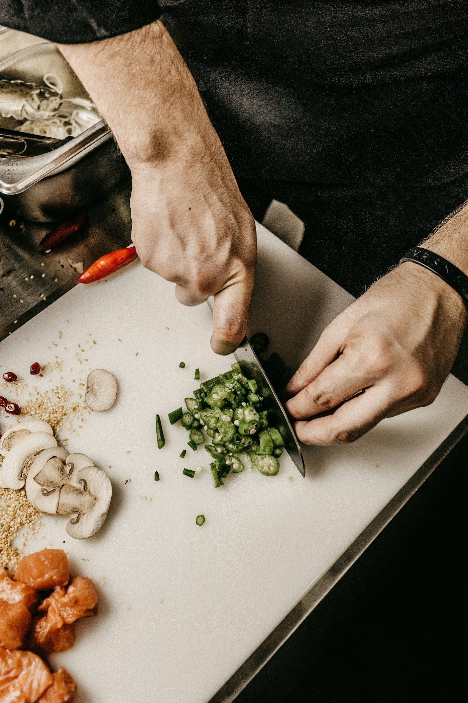
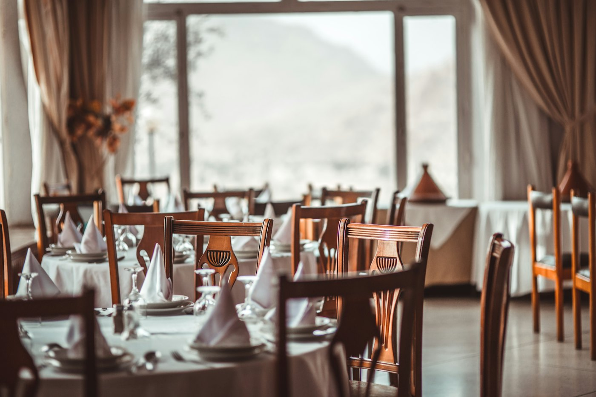

Douro · Dinner only
A room, a fire, and one menu.
Marrow is twenty-eight seats in Pinhão, above the river. The menu is written in the morning and served at two seatings. Wine by the glass is short and written on a card, not a book.
- Seatings
- 18:30 · 21:00
- Menu
- €78
- Closed
- Monday


Tonight’s menu

The kitchen

Ask for a table